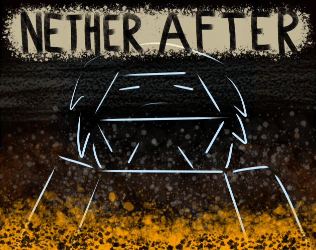

Introduction
This is a site to talk about my game, Nether After.

Nether After is an interactive fiction game set in the world of Minecraft. Featuring branching paths and varying endings, the choices you make will tailor the story, from your affinity with your crew, to who ultimately lives and dies.